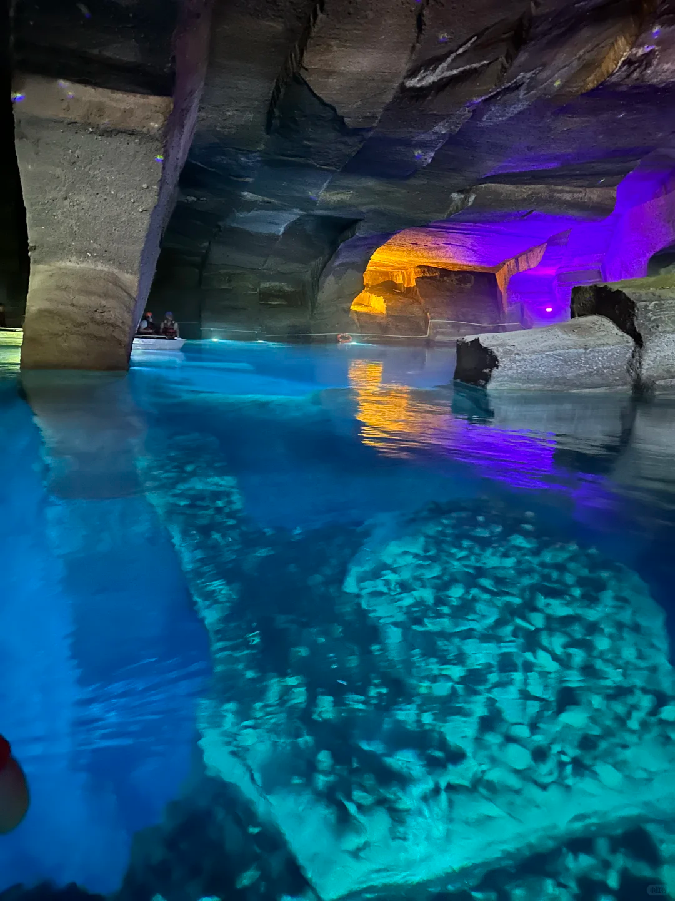
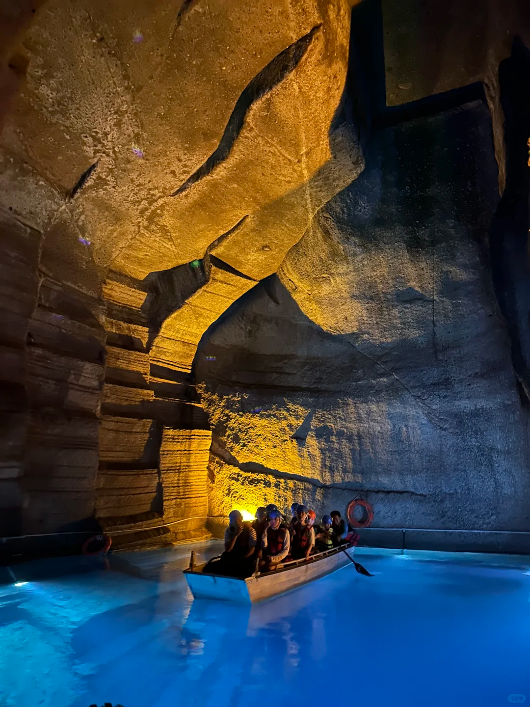
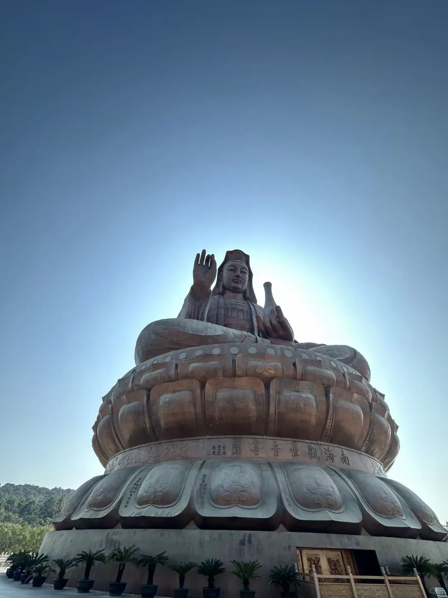
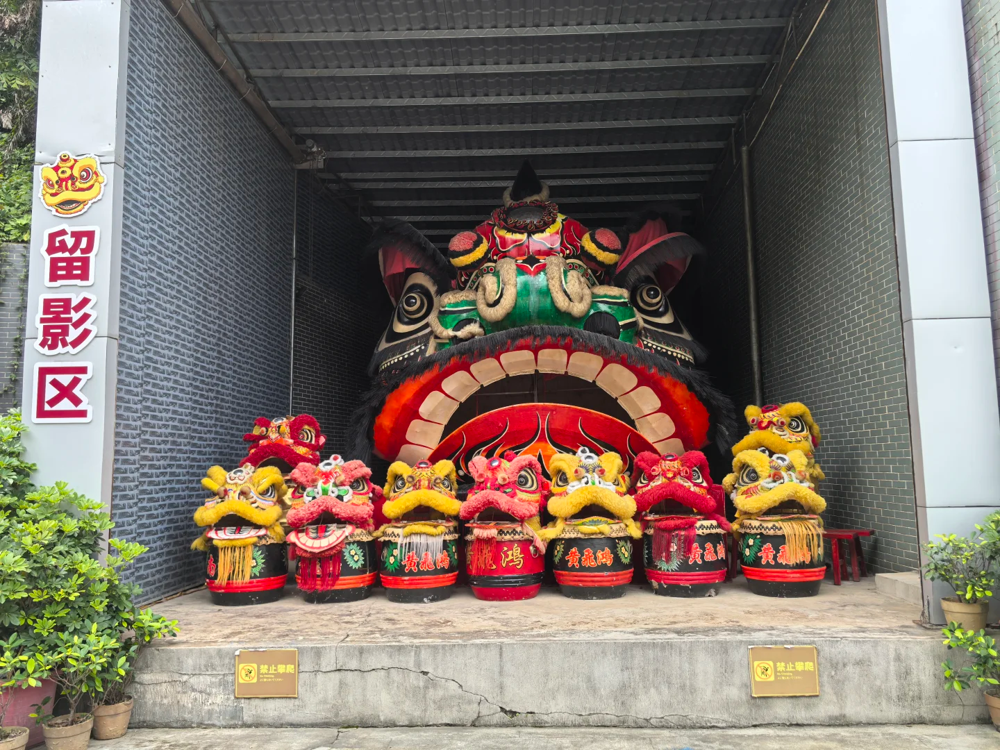
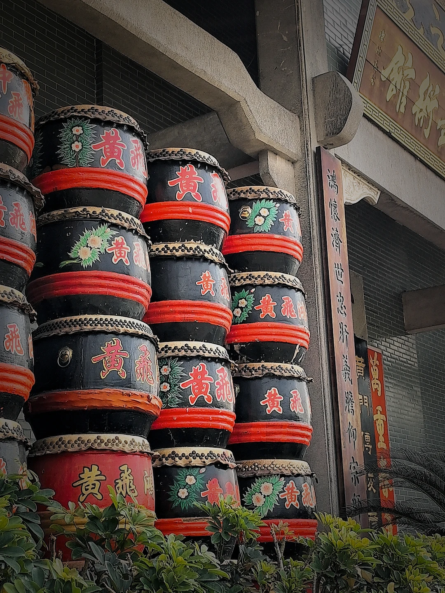
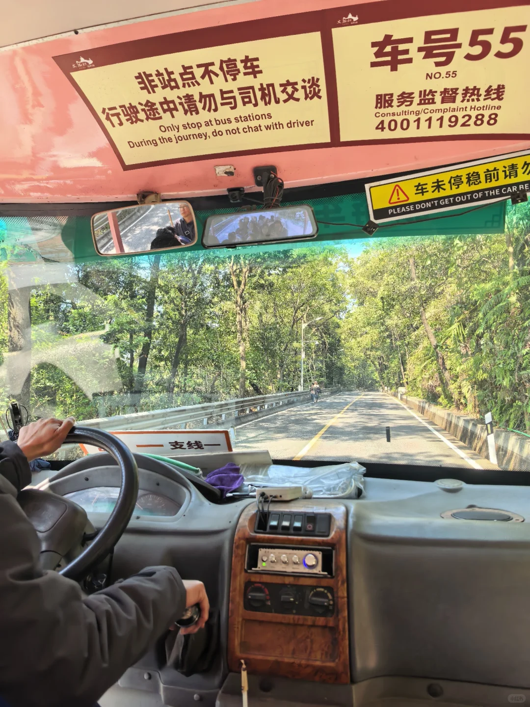
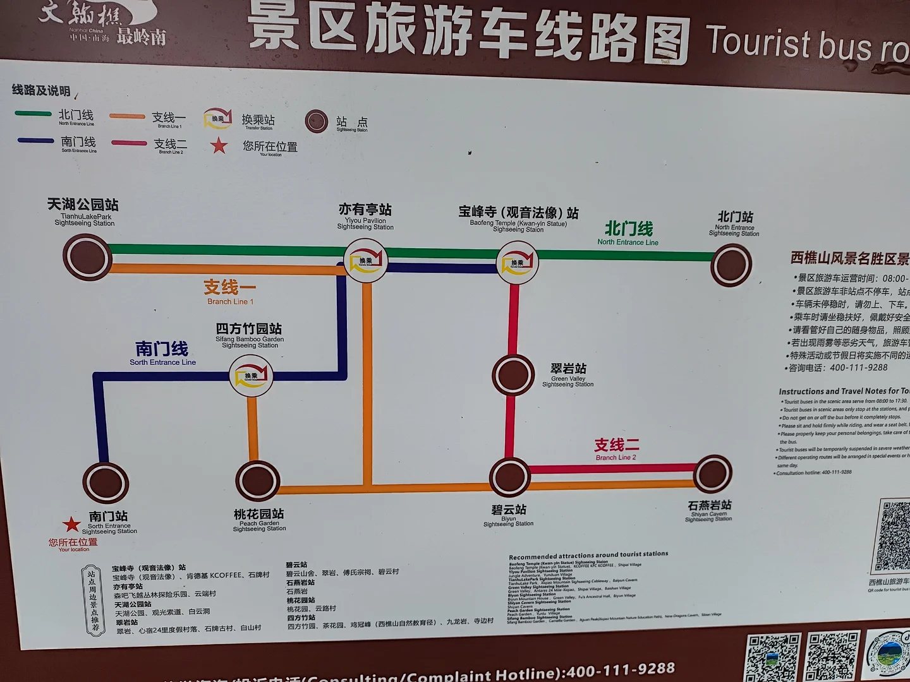
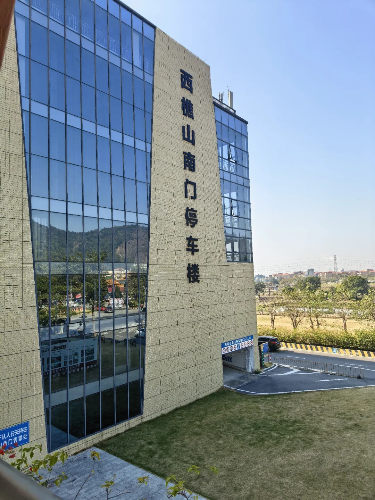
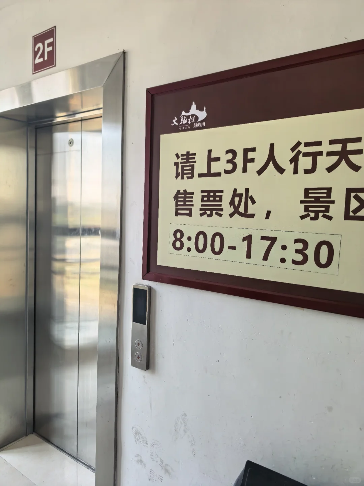

景点 & 餐厅总览
按行程顺序排列；标「★ 主目标」为必玩，标「可加」为时间充裕时的山下免费补充。各卡含开放时间与门票（详见 营业时间）。




石燕岩（★ 主目标）
西樵山狮脑峰东南 · 明代古采石场遗址数百年开采+常年渍水成湖，形成"水底牌坊""水上汽车"奇观，须乘船入洞近观。洞内恒温约 18℃，夏日最清凉。旅游车 B/D 线直达「石燕岩站」，下车步行约 600 m 平路到洞口（无台阶，老人可走）。

宝峰寺 / 南海观音文化苑
西樵山中部 · 旅游车直达寺内平坦，南海观音高 61.9 m，广场仰观已极壮观；登台阶非必需，适合全家祈福、拍照，遮荫好。
天湖公园
古火山口湖 · 旅游车 A 线直达三面环峰的火山口湖，九曲桥、待月亭均平路可达；可租船游湖（另购，约 ¥30–50/人）。娃最爱，全程平路。节假日有"黄飞鸿杯"狮王争霸。



黄飞鸿狮艺武术馆
山麓禄舟村（山下）· 黄飞鸿故居原址坐定观看醒狮表演约 45 分钟，零爬升，娃极兴奋。表演 9:30 / 10:30 / 14:30 / 15:30，本方案看 14:30 场。多含在免费预约景区票内，若另购约 ¥10/人。
南海博物馆（可加 · 山下）
南门入口东侧 · 步行可达佛山市南海区博物馆，7 个常设展厅（南海记忆 / 群英 / 广府风情等），康有为真迹 + 多媒体互动，老人小孩都友好，空调室内避暑。正午最晒时顺路进馆最合适。
听音湖（可加 · 山下免费）
西樵山脚 · 返程顺路人工湖广场，音乐喷泉、夜景灯光，平路漫步零爬升。若 14:30 看完醒狮还早，可散步 30–40 min 再回程。在景区外、不另购门票。


西樵山观光旅游车
南门 / 北门 · 全天通票随上随下山上唯一代步工具：A/B/C/D 四条线覆盖主要景点，凭 ¥40 通票随上随下。本方案南门进山坐 C 线到「亦有亭」→ 换 B/D 线到「石燕岩站」。老人小孩全程不爬山全靠它。


西樵山南门停车楼
自驾入园第一站 · 导航终点自驾家庭的入园落点：导航「西樵山风景区南门停车楼」，停好车即刷证入园、购观光车通票进山。车位充足，早到（8 点前）最稳。